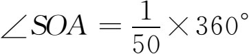
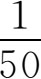
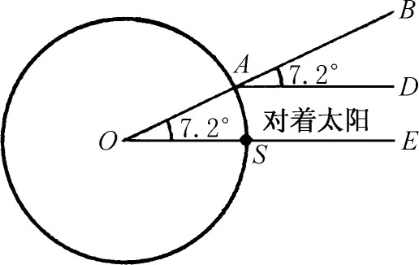
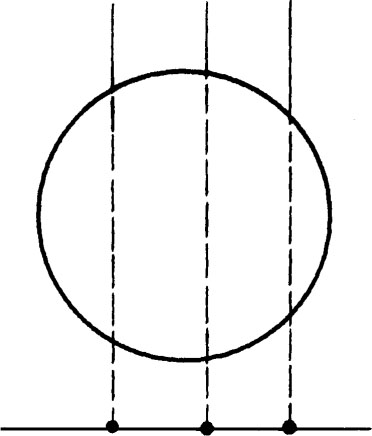
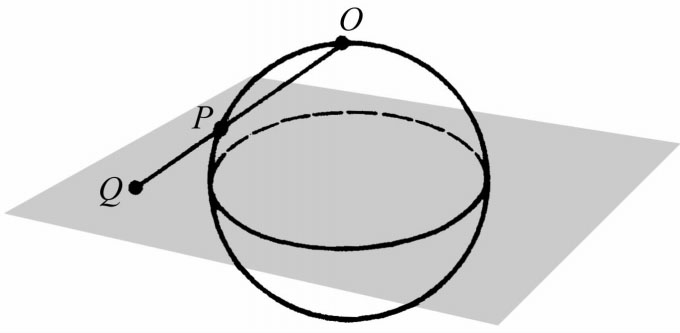
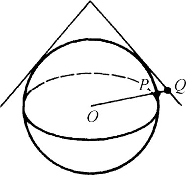

5．地理学
另一门奠基于希腊时代的科学是地理。虽然有少数几个古典时代的希腊人如阿那克西曼德和米利都的赫卡托伊斯（Hecataeus，死于公元前约475年）曾绘制了当时所知地面的地图，但到了亚历山大时代地理学才有了大的进展。他们测量或计算了地面上的距离、山的高度、谷的深度、海的广度。由于希腊世界的范围扩大了，更促使希腊人去研究地理。
亚历山大时代的第一个大地理学家是昔勒尼的埃拉托斯特尼（公元前约284—约前192）。此人是亚历山大图书馆馆长、数学家、哲学家、诗人、历史学家、语言学家、年表学家，并以古代最有学问的人闻名于后世。他曾在雅典柏拉图的学校里求过学，后被托勒玫三世延请到亚历山大。埃拉托斯特尼在亚历山大一直工作到晚年失明时为止，他由于失明自己绝食而死。
埃拉托斯特尼搜集了当时所知道的地理知识，计算了地面上许多重要地点（如城市）之间的距离。他最出名的工作是计算了地球（大圆）的周长。在赛伊尼（Syene）即如今叫阿斯旺的那个地方，夏至那天中午的太阳几乎正在天顶（图7.4），（这是从日光直射进该处一井内而得到证明的）。同时在亚历山大，该处在赛伊尼之北而几乎（1°之内）与它在同一子午线上，其天顶方向（图中的OB）与太阳方向（图中的AD）的夹角测得为360°的1/50。因太阳距地很远，故可把SE和AD看成是平行的。因此

。这说明SA弧是地球周长的
。赛伊尼到亚历山大的距离埃拉托斯特尼是这样估算的。骆驼队一天走100个视距段（stadia），从亚历山大到赛伊尼须走50天。因此这段距离是5000个视距段，从而地球周长是250000个视距段。一般认为一个视距段等于157米，故埃拉托斯特尼所得结果是24662英里。这个结果比以前一切估算的结果精确得多。
图7.4
埃拉托斯特尼写过《地理学》（Geography）一书，其中载入了他所作测量和计算的方法和结果。他还在书中说明了地表变化的性质和原因。他还绘制过世界地图。
科学方法绘制地图成为当时地理工作的一部分。一般认为纬度和经度是希帕恰斯引入的，但这套办法在他之前就已经有人知道。用了经纬度当然就可以准确描述地球上的位置。希帕恰斯确曾发明了正交投射法，用无穷远处射来的“光线”把地球投射到一个平面上（图7.5）。例如，我们看到的月球实际上就是它的正交投射图。他用这个方法就可把一部分地面画在一个平面上。

图7.5
托勒玫在他的《平球法》（Planisphaerium）中用了球极平面投影法（在他之前希帕恰斯可能已经用过）。从O作一直线通过地球上一点P延长到赤道平面或另一极处的切平面（图7.6）。据说希帕恰斯是利用切平面的，而托勒玫是利用赤道平面的。这样就把球面上的点映射到一个平面上。在这种投影图里，从图中央到图上所有点的方向是真实方向。局部性的角也是不变的（保角映射），但托勒玫并未提及这一点。因此子午线和纬线是成直角的。球面上的圆在图面上还是圆，但面积变了。托勒玫自己又发明了一种锥面投影法，这就是把地面上一块区域从地心投射到一个相切的锥面上（图7.7）。
 |  |
| 图7.6 | 图7.7 |
托勒玫在他那部包含八篇的《地理学》（Geographia）中讲述了绘制地图的方法。第一篇第24章从章名和内容上看可知是专门论述把球面绘成平面的最古老的著作。全部《地理学》可说是第一本地图集和地名辞典。它给出了地球上8000处地方的经纬度，在好几百年间是一本标准的参考书。